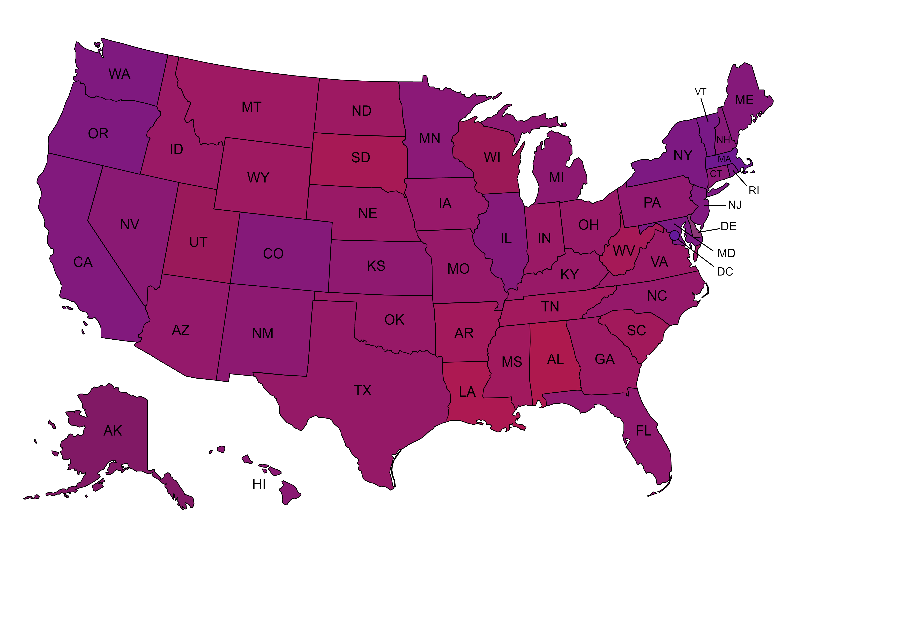

Politic
all
Discover Your Views
Understanding Bias
Our Extension

All I See is Red
or
Blue
Let's get some perspective
This image shows a composition of red and blue for each state instead of just red or blue